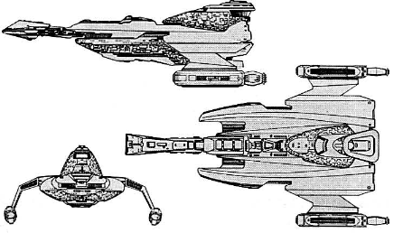

L-24 Ever Victorious-class Battlecruiser (KE)

Battle Stats
Engines and Superstructure
Total Power Units - 80 (Warp Engines - 2x28, Impulse Engines - 24)
MPR - 5/1
Superstructure - 40
Maximum Warp - 2
Industry Points to Build - 8
Beam Weapons (Disruptors)
Max Power - 7
Firing Chart - U
Arcs - 4F/P, 4F/S
Bonuses - +3(1-7) +2(8-15) +1(16-20)
Beam Weapons (Disruptors)
Max Power - 5
Firing Chart - X
Arcs - 2P/A, 2S/A
Bonuses - +3(1-7) +2(8-15) +1(16-20)
Missile Weapons (Photon Torpedoes)
Power to Arm - 2
Damage - 20
Firing Chart - R
Arcs - 2F, 2A
Deflector Shields
Max Shield Power - 15
SPR - 1/3